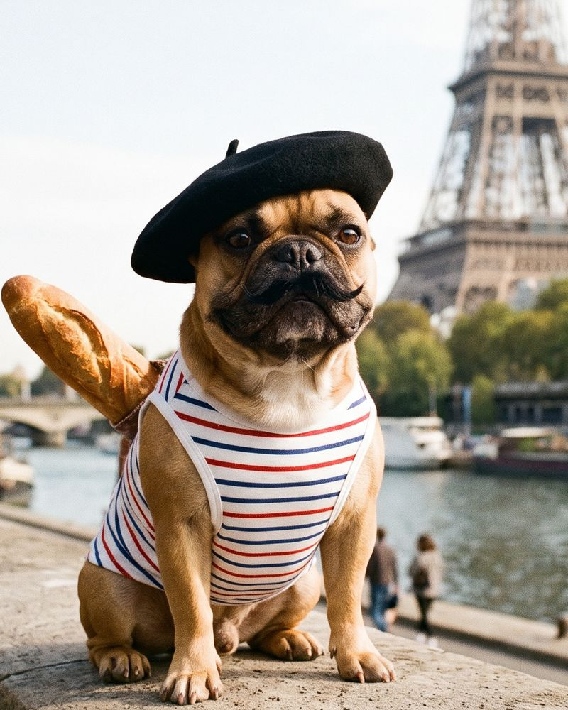
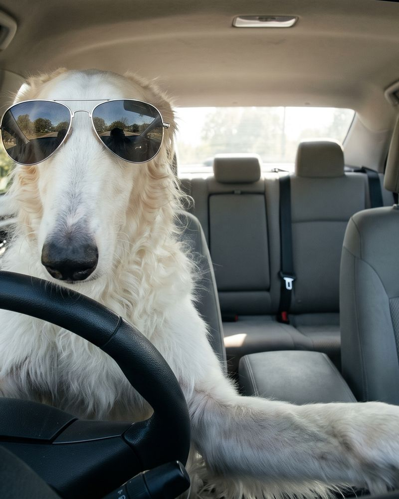
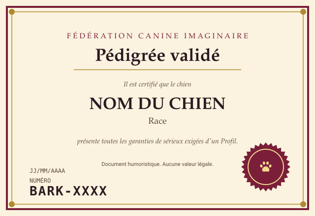

Pédigrée validéJean Baguette
Bouledogue français
Béret, baguette, aucune excuse.
Direction visuelle · ticket 01
Une application de rencontre pour chiens, soignée au point de ne laisser aucun doute sur le sérieux de la démarche. Les photos portent le gag, l'interface se tient bien droite. Le bouton du haut bascule le Mode daltochien sur toute la page.
Logotype : serif à empattements, le 4 en couleur de marque.
Icône d'application 512 px : une Patte blanche sur la couleur de marque.
Version CSS, utilisée dans l'en-tête : suit les variables de couleur.
Patte remplace le cœur, Truffe remplace l'étoile, Panneau remplace la croix. Les états s'obtiennent au clavier, à la souris et au toucher, les colonnes ci-dessous les forcent pour les comparer.
| Normal | Survolé | Actif | Désactivé | |
|---|---|---|---|---|
| Patte | ||||
| Truffe | ||||
| Panneau |
Les mêmes noms de variables dans les deux modes. Le Mode daltochien ne garde que des bleus et des jaunes et sépare les trois actions par la clarté (bleu moyen, jaune clair, ardoise sombre) et par la forme des icônes.
Aa Titre
--font-display : Iowan Old Style, Palatino, Georgia. Piles système, aucune police téléchargée.
Corps de texte lisible, 16 px mini.
--font-body : system-ui. Échelle 12, 14, 16, 20, 26, 36, 52 px.
Dix Profils de la démo. Les boutons, et les flèches gauche, haut et droite du clavier quand le focus est dans le Paquet, déclenchent les retours animés, puis l'écran de Match ou l'écran de fin.

Pédigrée validéBouledogue français
Béret, baguette, aucune excuse.
Vous et Jean Baguette

Vous vous êtes reniflés à distance. Ça compte.
Vous avez vu tout le Paquet. Revenez quand d'autres chiens auront été déguisés.
Bark4me Pro · Espace Éleveurs
Mettez vos portées en visibilité auprès d'une communauté exigeante de Visiteurs qui swipent avec sérieux.
Demander une démonstrationChaque certificat porte un numéro BARK vérifiable en ligne. Sérieux garanti, ou presque.
Vos Profils apparaissent dans le Paquet, une seule fois, devant le bon public.
Pattes, Truffes et Panneaux consolidés dans un tableau de bord sans aucune valeur décisionnelle.
« Depuis Bark4me, j'ai reçu trois Pattes et un Panneau. Mon chiffre d'affaires est inchangé. »
Éleveur fictif, région des hotdogs
« Un outil sérieux pour un métier sérieux. »
Éleveuse fictive, bouledogues
Page parodique. Bark4me ne met en relation aucun éleveur réel.
L'interrupteur reste dans l'en-tête sur toutes les pages. Cible de 44 px mini, libellé court sur mobile, état annoncé par aria-checked, choix mémorisé dans le navigateur.
Bouledogue français
Béret, baguette, aucune excuse.
Bark4me Pro · Espace Éleveurs
Mettez vos portées en visibilité auprès d'une communauté exigeante de Visiteurs qui swipent avec sérieux.
Demander une démonstrationChaque certificat porte un numéro BARK vérifiable en ligne. Sérieux garanti, ou presque.
Vos Profils apparaissent dans le Paquet, une seule fois, devant le bon public.
Pattes, Truffes et Panneaux consolidés dans un tableau de bord sans aucune valeur décisionnelle.
« Depuis Bark4me, j'ai reçu trois Pattes et un Panneau. Mon chiffre d'affaires est inchangé. »
Éleveur fictif, région des hotdogs
« Un outil sérieux pour un métier sérieux. »
Éleveuse fictive, bouledogues
Page parodique. Bark4me ne met en relation aucun éleveur réel.
Le certificat est un SVG autonome (pedigree.svg). Le service pedigree remplace le texte des éléments #nom, #race, #numero (format BARK-XXXX) et #date. Le badge de la carte renvoie vers ce certificat.

Pédigrée validé
Badge affiché sur la carte quand le Profil a un Pédigrée.
Ratios calculés en direct depuis les variables de la page, dans les deux modes. Seuils WCAG AA : 4,5:1 pour le texte, 3:1 pour les composants. Détail dans ACCESSIBILITE.md.
| Paire | Seuil | Normal | Daltochien |
|---|